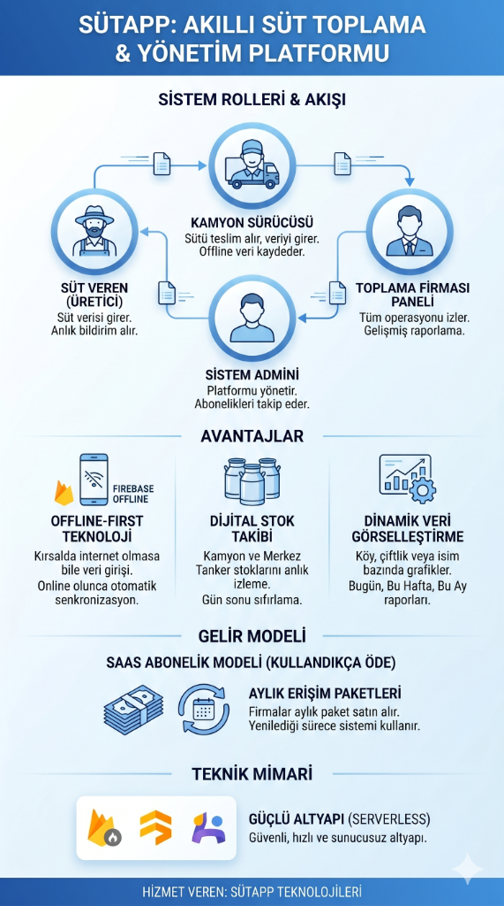

| Teklif Sunulan: | Süt Toplama ve Dağıtım Firmaları |
| Hizmet Sağlayıcı: | SütApp Teknolojileri A.Ş. |
| Tarih: | Mayıs 2026 |
| Versiyon: | v1.0 (Final) |
Günümüz süt toplama operasyonlarında manuel kayıtlar; veri kayıplarına, üretici ile toplama merkezi arasında güven problemlerine ve anlık stok takibinin yapılamamasına neden olmaktadır. Süt toplama süreçlerindeki bu manuel işlemler, firmalar için ciddi finansal kayıplara ve yönetimsel zorluklara zemin hazırlamaktadır.
Önerilen SütApp platformu; süt üreticisinden merkez tankere kadar olan tüm tedarik zincirini uçtan uca dijitalleştiren, internet kesintilerinden etkilenmeyen (offline destekli), gelişmiş raporlama ve grafiklere sahip, bulut tabanlı (SaaS) bir yönetim sistemidir. Bu sistem sayesinde firmalar kayıpları sıfıra indirecek, sürücü performanslarını ve bölge verimliliklerini anlık olarak izleyebilecektir.
SütApp, birbiriyle tam entegre ve gerçek zamanlı çalışan 4 temel rol üzerine kurgulanmıştır:

Sürücü uygulaması kırsal bölgelerde internet bağlantısı koptuğunda veri kaybını önlemek amacıyla lokal veri tabanını (SQLite/Room/Realm) kullanır. Cihaz internete bağlandığı anda veriler arka planda otomatik olarak buluta senkronize edilir.
Firebase Cloud Messaging (FCM) altyapısı kullanılarak üreticilere süt teslimatı yapıldığı an anlık bildirim gönderilir. Bu sayede üretici hem bilgilendirilir hem de sisteme duyduğu güven pekiştirilir.
Firma yönetim panelinde ApexCharts veya Chart.js kütüphaneleriyle hazırlanan, modern, gözü yormayan dinamik çizgi, bar ve pasta grafikleri bulunur. Köy, bölge ve üretici bazlı verimlilik analizleri anlık olarak izlenebilir.
Firmalar için sunucu barındırma, yedekleme veya altyapı maliyeti yoktur. Her firma, verilerini diğer firmalardan izole ve güvenli bir şekilde barındıran Multi-tenant mimari yapısıyla sisteme dahil olur.
Uygulama, süt toplama firmalarına "Kullandıkça Öde" (Subscription) abonelik modeliyle sunulacaktır.
| Paket Adı | Kapsam & Araç Limiti | Aylık Süt Hacmi | Raporlama Detayı | Aylık Ücret |
|---|---|---|---|---|
| Küçük Ölçekli | 1 - 3 Sürücü / Kamyon | 15.000 Litreye Kadar | Standart Grafikler | 1.500 TL |
| Orta Ölçekli | 4 - 10 Sürücü / Kamyon | 75.000 Litreye Kadar | Gelişmiş & Filtreli Rapor | 4.500 TL |
| Endüstriyel | Sınırsız Sürücü / Kamyon | Sınırsız Hacim | Özel Analitik & API | Teklif Alınız |
* Abonelik Kontrolü: Paket yenilemesi yapmayan firmaların yönetim panelleri ve sürücülerinin sisteme veri giriş yetkileri otomatik olarak kısıtlanır. Geçmiş veriler güvenle saklanmaya devam eder, abonelik yenilendiği an tüm sistem kesintisiz olarak çalışmaya devam eder.
SütApp sisteminin sıfırdan geliştirilmesi ve canlıya geçişi toplamda 6 aşamadan oluşmakta ve yaklaşık 20 hafta sürmesi öngörülmektedir:
SütApp projesi, geleneksel ve hata payı yüksek olan süt toplama süreçlerini tamamen dijitalleştirerek firmalara hız, şeffaflık ve finansal koruma sağlamaktadır. Yapılacak bu yatırım ile veri kayıplarından doğan kaçaklar sıfırlanacak, sürücü ve araç performansları izlenebilecek ve en önemlisi üreticinin toplama firmasına olan güveni artırılarak iş hacmi büyütülecektir. Bulut tabanlı SaaS modeli sayesinde de firmalar büyük sunucu yatırımları yapmak yerine kullandıkları ölçüde ekonomik olarak ödeme gerçekleştirecektir.